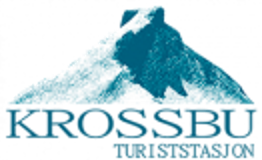

X
KROSSBU turisthytte
Krossbu er ei privateid turisthytte frå 1901. Hytta ligg idyllisk til ved riksveg 55, Sognefjellsveien, Noregs høgste fjellovergang. Over tjue 2000-meterstopper ligg i området.
Overnatting: Frå 375,- inkl. frukost.
Sesong: 12. april - medio september 2019
Tlf. +47 970 01 267
post@krossbu.no
www.krossbu.no
